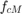
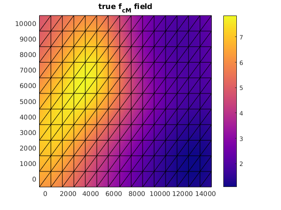
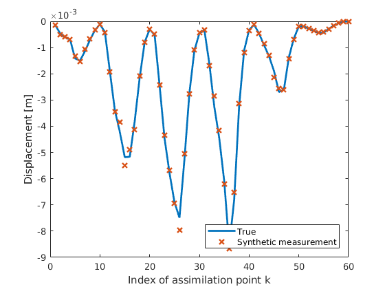
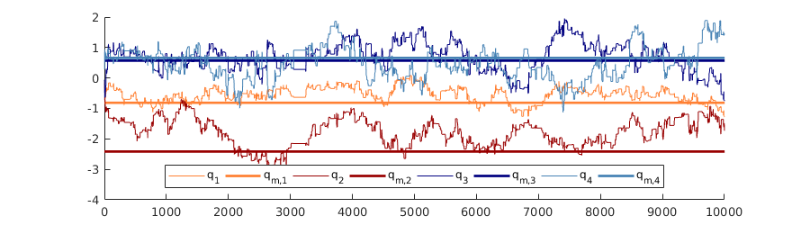
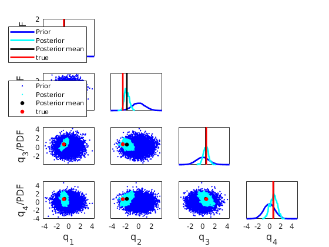
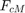
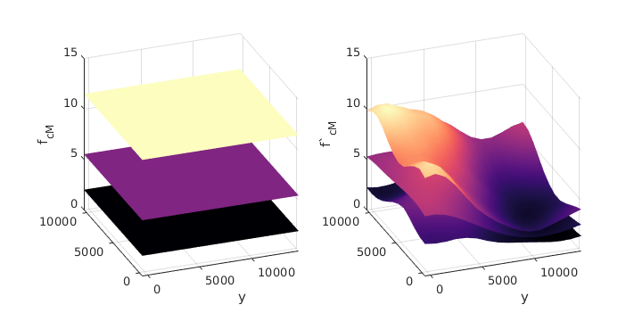

Example 6 -- sampling from the posterior of  by sampling
This example shows how to generate samples of the posterior distribution of the scaling factor when the field is inhomogenous and thus expressed by the KLE
Contents
- Get prior distribution, proxi model, error model and measurement
- Choose a starting point
- Choose proposal density
- Define the likelihood
- Do the random walk
- plot the chain
- Cut the chain
- plot MCMC sample points
- Map samples to
- Compute statistics
- Plot true field, mean field, std of the field and error of posterior mean
- Plot the prior and the posterior mean and quantiles
Get prior distribution, proxi model, error model and measurement
see Initiation of updates for the second scenario
Initiate_updates_RField; % the projected Q q_proj = map.f2q(f_cm_true); method = 'MCMC'
method =
'MCMC'
  Choose a starting point
q0 =Q.mean;
Choose proposal density
variance of the prior
prior_var=Q.var;
% standard deviation of the proposal density
sigma_p = sqrt(prior_var)*0.2;
P=generate_stdrn_simparamset(sigma_p);
Define the likelihood
PCE surrogate of the measurable
Y_func = @(xi)gpc_evaluate(upsilon_k_alpha, V_y, xi); q2likelihood = @(q)(E.pdf(z_m - Y_func(map.q2xi(q))));
Do the random walk
desired number of samples
N = 50000; % do the random walk to sample from the posterior of X q2pdf_func=@(q) (q2likelihood(q)*Q.pdf(q)); % Run metropolis hasting sampler q_j=q0; Qs=[]; for i=1:N %display(strvarexpand('$j$/$N$')) xn=q_j+P.sample(1); a=funcall(q2pdf_func,xn)/funcall(q2pdf_func,q_j); a=a*P.pdf(q_j-xn)/P.pdf(xn-q_j); if a>=1 || rand<a q_j=xn; end Qs=[Qs q_j]; end
plot the chain
plot the chain
h= figure(); h.Position = [750 120 890 250]; hold on color_str = {[1 0.5000 0.2000], [0.6000 0 0], [0 0 0.5020], [0.2745 0.5098 0.7059]}; for i = 1:4 plot(Qs(i,:)', 'LineWidth', 0.5, 'Color', color_str{i}, ... 'DisplayName', strvarexpand('q_$i$')) plot(xlim(), [q_proj(i), q_proj(i)], 'Color', color_str{i},... 'LineWidth', 2, 'LineStyle', '-', 'DisplayName', strvarexpand('q_{m,$i$}')) end xlim([0,10000]) legend('Orientation', 'horizontal', 'Location', 'South') save_png(h, 'MCMC_chain_field', 'figdir', 'figs', 'res', 600)
Cut the chain
N_burn = 5000; Qs = Qs(:,N_burn:end);
plot MCMC sample points
h_scatter = figure();
Qs_prior = Q.sample(10000);
q_mean = mean(Qs,2);
plot_grouped_scatter({Qs_prior(1:4, :), Qs(1:4, :), q_mean(1:4), q_proj(1:4)}, ...
'Color', 'bckr', 'Legends', {'Prior', 'Posterior', 'Posterior mean', 'true'}, ...
'Labels', {'q_1', 'q_2', 'q_3', 'q_4'},'MarkerSize', [5,5,15,15],...
'FontSize', 10, 'Type', 'pdf');
save_png(h_scatter, 'MCMC_update_field_scatter', 'figdir', 'figs', 'res', 600)
 Map samples to
samples of the posterior 
f_cm_j = map.q2f(Qs);
Compute statistics
mean of the posterior
f_cm_mean = mean(f_cm_j ,2);
% variance of the density
f_cm_var = var(f_cm_j , [],2);
Plot true field, mean field, std of the field and error of posterior mean
[h_f, h_fields] = plot_true_mean_var_and_error(pos, els, ... f_cm_true, f_cm_mean, f_cm_var, ind_y, z_m); save_png(h_f, ['true_mean_std_err', method], 'figdir', 'figs', 'res', 600)
ans =
2×4 Axes array:
Axes Axes Axes Axes
Axes Axes Axes Axes

Plot the prior and the posterior mean and quantiles
h_quant= plot_prior_and_posterior_mean_and_quantiles(f_cm_j, pos, els, mu, sig); save_png(h_quant, ['field_prior_mean_and_quant', method], 'figdir', 'figs', 'res', 600)